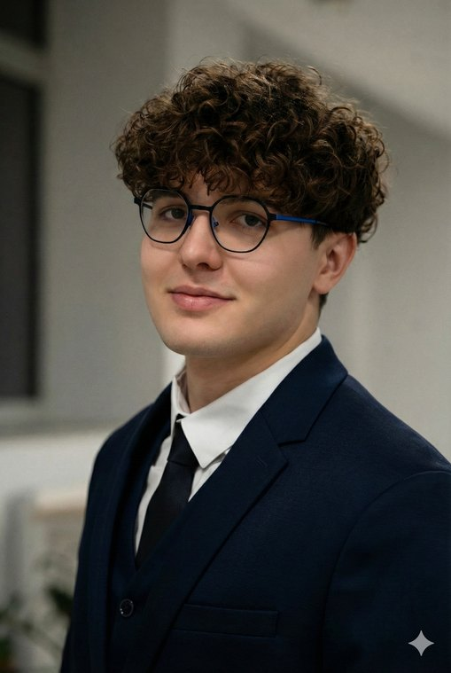

Sécurité internationale
Étudiant à la maîtrise en études internationales
Université Laval, Québec
Je travaille sur le terrorisme et l'IA
Parcours
Quatre escales, de la Bretagne au Québec. Faites défiler pour suivre le trajet sur le globe.
-
2018 – 2022
Ploërmel, Bretagne
Mes racines. Baccalauréat au lycée La Mennais.
Un premier stage au Musée de la Résistance de Saint-Marcel, puis, chaque été depuis 2023, la responsabilité de la collecte des céréales chez Eureden.
-
2022 – 20XX
La Roche-sur-Yon, Vendée
Licence de science politique à l'ICES, établissement membre de la Conférence des grandes écoles.
Affaires et relations internationales, politiques publiques, économie et gestion de crise. Projet de recherche : « L'intelligence artificielle au service du terrorisme » (2025).
-
Janvier – juin 2025
Livingston, Alabama
Semestre de mobilité à l'University of West Alabama. GPA de 4.0, inscrit à la President's List.
Étude du système politique et juridique américain, et une immersion qui a forgé mon adaptabilité et mon ouverture d'esprit.
-
Depuis 2026
Québec
Maîtrise en études internationales à l'Université Laval, concentration sécurité internationale.
Terrorisme et technologies émergentes, prévention de l'extrémisme violent, politiques de défense.

Je cherche à comprendre comment naissent les crises, et comment les États et les organisations internationales y répondent.
Formé en science politique à l'ICES, je poursuis aujourd'hui une maîtrise en études internationales à l'Université Laval.
Mon semestre aux États-Unis m'a plongé dans un autre système politique et juridique. Ma préparation militaire au 511e régiment du Train m'a fait découvrir de l'intérieur la chaîne opérationnelle de l'Armée de terre.
Je souhaite mettre ces compétences au service de la recherche stratégique, de la diplomatie ou d'une organisation internationale.
- Terrorisme et technologies émergentesUsage de l'intelligence artificielle par les groupes terroristes, prévention de l'extrémisme violent, encadrement juridique international.
- Gestion de crisePrise de décision, coordination des acteurs et réponse des organisations internationales.
- Usage de la force et droit internationalFrappes de drones, légitimité et soutien de l'opinion publique.
- Politiques de défenseRéarmement canadien et base industrielle de défense.
- Théories des relations internationalesDu réalisme au constructivisme : Aron, Morgenthau, Waltz, Wendt, Bourdieu.
Expériences
Cliquez sur une ligne pour voir le détail.
Depuis 2023 Responsable saisonnier de la collecte des céréales Eureden, Ploërmel
- Travail en autonomie complète sur site ; responsable du magasin et des saisonniers.
- Gestion logistique et traçabilité : saisie des données, coordination avec les transporteurs et les agriculteurs.
- Réception et enregistrement des livraisons agricoles : pesée, échantillonnage, contrôle.
Octobre 2023 Préparation militaire Terre 511e régiment du Train, Auxonne
- Major de l'épreuve du parcours d'obstacles.
- Vie en collectivité et discipline militaire ; gestion de la fatigue et du stress.
- Découverte du fonctionnement de la chaîne opérationnelle de l'Armée de terre.
Décembre 2018 Stagiaire, Musée de France Musée de la Résistance, Saint-Marcel
- Accueil des visiteurs.
- Catalogage et indexation d'ouvrages historiques ; manipulation d'objets rares.
Travaux récents
Une sélection de travaux réalisés à l'ICES et à l'Université Laval.
-
Note politique
Prévenir la radicalisation et l'extrémisme violent en Afrique francophone
Note de décision adressée à l'Organisation internationale de la Francophonie, proposant un dispositif d'échange de pratiques et de formation entre États membres.
-
Bibliographie commentée
L'émergence de l'IA dans les groupes terroristes et les tueries de masse
Dynamiques politiques et encadrement juridique à l'international : quinze sources en science politique et en droit.
-
Exposé
Droit international, efficacité militaire et soutien public aux frappes de drones
Présentation critique de l'article de Kreps et Wallace (Journal of Peace Research, 2016).
-
Projet d'équipe
Le réarmement canadien et la Stratégie industrielle de défense
Analyse interdisciplinaire ; responsable des graphiques, des schémas et de l'appareil de notes.
-
Projet de recherche
L'intelligence artificielle au service du terrorisme
Projet de recherche mené en licence à l'ICES (2025).
Langues et compétences
Niveaux de langue selon le Cadre européen commun de référence.
Savoir-faire
- Analyse politique
- Rédaction
- Synthèse de documents
- Gestion de crise
- Logistique et coordination
- Prise d'initiative
Outils
- Git et GitHub
- HTML et CSS
- Certification PIX (615)
- Dépannage informatique
En dehors des cours
- Astronomie
- Échecs
- Musculation
- Badminton
- Ski alpin
- Sports mécaniques
Curriculum vitæ
Mon CV complet, à consulter en ligne ou à télécharger.
Le CV complet sera mis en ligne prochainement.
Me contacter
Pour un stage, un projet de recherche ou un échange sur les questions de sécurité internationale.